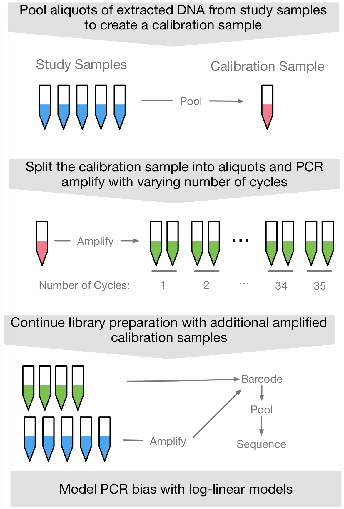
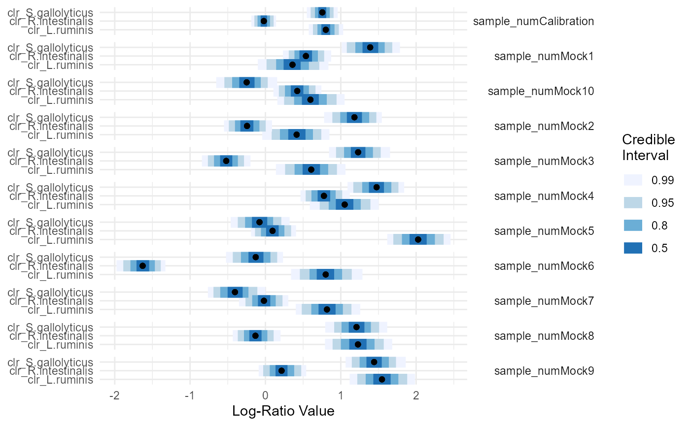
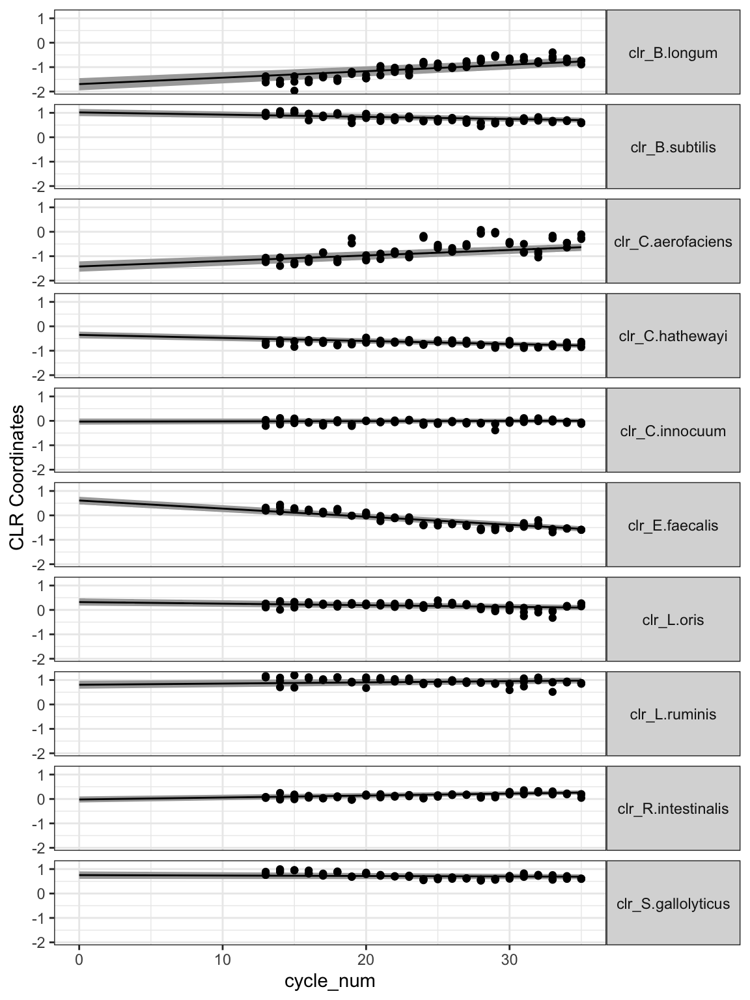

mitigating-pcrbias.RmdIf you have no already done so, I would read through our manuscript Measuring and Mitigating PCR Bias in Microbiome Data. This vignette only discusses the computational aspect of our approach, equally important is the design of the PCR calibration curve which is detailed in the manuscript.
PCR bias can be both measured and corrected by combining a specially designed calibration curve with statistical models. The below figure gives a brief overview of the calibration experiment. In brief, samples are pooled to create a “calibration sample”. This calibration sample then contains DNA from every taxa in your study. The calibration sample is then split into multiple aliquots and amplified for a varying number of cycles. You then sequence the resulting samples along with the original samples. Then you turn to modeling (which is the focus of this vignette).

In the manuscript, we show that PCR bias is well approximated by a simple multiplicative process. When translated to sequence count data, this means that PCR bias represents a linear process in log-ratio space: We just need multinomial logistic-normal linear models (aka pibble models in the fido package). If we set our model up correctly then PCR bias is just a linear model: There is a bias parameter and the amout of bias seen for a given sample is that parameter times the number of PCR cycles that sample underwent prior to sequencing. In this case our estimate for the unbiased composition of each sample just becomes a unique intercept for each sample (if you have technical / biological replicates then the replicates will share an intercept; we demonstrate that below as well). Another way to think about this is we want to estimate the composition when the nubmer of PCR cycles is equal to zero (aka the intercept).
Here I will show an example of how such data (including calibration samples can be modeled). This is the mock community data we analyzed in the manuscript.
library(fido) library(dplyr) #> #> Attaching package: 'dplyr' #> The following objects are masked from 'package:stats': #> #> filter, lag #> The following objects are masked from 'package:base': #> #> intersect, setdiff, setequal, union library(tidyr) library(ggplot2) library(driver) set.seed(5903) # First load the data data(pcrbias_mock)
Lets first take a brief look at the data. There are two objects Y (a count table that I already preprocessed just as in our manuscript) and metadata which containes the covariates we need (including the number of PCR cycles each sample has undergone).
Y[1:5,1:5] #> cycle13.1 cycle13.2 cycle13.3 cycle14.1 cycle14.2 #> B.longum 27 28 22 37 44 #> B.subtilis 320 299 272 513 650 #> C.aerofaciens 35 32 39 43 84 #> C.hathewayi 61 52 59 93 117 #> C.innocuum 121 91 112 197 208 head(metadata) #> sample_name sample_num cycle_num machine #> 1 cycle13.1 Calibration 13 3 #> 2 cycle13.2 Calibration 13 3 #> 3 cycle13.3 Calibration 13 3 #> 4 cycle14.1 Calibration 14 4 #> 5 cycle14.2 Calibration 14 4 #> 6 cycle14.3 Calibration 14 4
The only non-obvious variable here is probably machine which just is a categorical variable denoting which of 4 different PCR machines used to amplify a given sample. When writing the paper, we thought this might be a source of bias so we included this as a term in our model (we will do the same here just to demonstrate how).
As fido doesn’t yet have a formula interface (I will write that eventually), you just need to use the formula interface provided by base-R’s model.matrix function.
X <- t(model.matrix(~ cycle_num + sample_num + machine -1, data = metadata)) X[,1:5] #> 1 2 3 4 5 #> cycle_num 13 13 13 14 14 #> sample_numCalibration 1 1 1 1 1 #> sample_numMock1 0 0 0 0 0 #> sample_numMock10 0 0 0 0 0 #> sample_numMock2 0 0 0 0 0 #> sample_numMock3 0 0 0 0 0 #> sample_numMock4 0 0 0 0 0 #> sample_numMock5 0 0 0 0 0 #> sample_numMock6 0 0 0 0 0 #> sample_numMock7 0 0 0 0 0 #> sample_numMock8 0 0 0 0 0 #> sample_numMock9 0 0 0 0 0 #> machine2 0 0 0 0 0 #> machine3 1 1 1 0 0 #> machine4 0 0 0 1 1
You can see that in doing this we have created a design matrix which has encoded the PCR machine using a series of 3 dummy variables. We also have a series of dummy variables denoting which samples are biologically unique (e.g., sample_num). The -1 in the formula just tells R to have a unique intercept for each biological sample (e.g., to use a one-hot-encoding rather than the dummy encoding used for the PCR machines).
Next we are going to specify our model priors and fit the model. A detailed description of the general thought process I like to follow when creating priors in fido is provided in the vignette Tips for Specifying Priors. Here I am just going to a simple prior where I just change Gamma from its default values. If you are wondering, in the manuscript I choose the multiplier 10 based on maximum marginal likelihood. At the end of this vignette I will show an example of how this can be done.
Next we are going to transform the results into CLR coordinates and interpret them in that space.
fit <- to_clr(fit)
Thats about it. Now its just interpteting the model results. Lets say you want to investigate the estiamted unbiased composition, then you just have to look at the infered random intercepts for the corresponding sample_num variable. We can plot the results simply enough:
# pull out indicies for random intercepts corresponding to `sample_num` focus.covariate <- rownames(X)[which(grepl("sample_num", rownames(X)))] # Also just so the plot fits nicely in Rmarkdown we are also going to just # plot a few of the taxa focus.coord <- paste0("clr_", c("S.gallolyticus", "R.intestinalis", "L.ruminis")) # Also to make the plot fit nicely, I just flip the orientation of the plot plot(fit, par="Lambda", focus.cov=focus.covariate, focus.coord=focus.coord) + theme(strip.text.y=element_text(angle=0, hjust=1)) + facet_grid(.data$covariate~.) #> Warning: 'geom_intervalh' is deprecated. #> Use 'geom_interval' instead. #> See help("Deprecated") and help("tidybayes-deprecated").

The compositional bias introduced at each cycle can also be visualized.
# Also to make the plot fit nicely, I just flip the orientation of the plot plot(fit, par="Lambda", focus.cov="cycle_num") #> Warning: 'geom_intervalh' is deprecated. #> Use 'geom_interval' instead. #> See help("Deprecated") and help("tidybayes-deprecated").

The fido package has a bunch of tools for working with such fitted models depending on what you ultimately want to do. See the main pibble vignette for a fuller description of what you can do with such fitted models.
One plot I find particularly useful, is visualizing the calibration data and the fitted bias model. This can be done as follows:
# First transform the data into CLR coordinates (requires pseudo-count to deal with # zeros). Then will convert to tidy format for ggplot tidy_calibration <- driver::clr_array(Y+0.5, 1) %>% # transform to CLR as.data.frame() %>% select(starts_with("cycle")) %>% # select only samples from the calibration t() %>% as.data.frame() tidy_calibration$sample_name <- rownames(tidy_calibration) tidy_calibration <- tidy_calibration %>% gather(coord, val, -sample_name) %>% mutate(coord = as.numeric(substr(coord, 2, 4))) %>% left_join(metadata, by="sample_name") %>% mutate(coord = names_coords(fit)[coord]) # Now the important part - lets grab the pibble result of interest X.tmp <- matrix(0, nrow(X), 2) # Create fake covariate data to predict the regression line based on rownames(X.tmp) <- rownames(X) X.tmp["cycle_num",2] <- 35 X.tmp["sample_numCalibration",] <- 1 X.tmp # simple, just going to predict the composition for each of these two samples #> [,1] [,2] #> cycle_num 0 35 #> sample_numCalibration 1 1 #> sample_numMock1 0 0 #> sample_numMock10 0 0 #> sample_numMock2 0 0 #> sample_numMock3 0 0 #> sample_numMock4 0 0 #> sample_numMock5 0 0 #> sample_numMock6 0 0 #> sample_numMock7 0 0 #> sample_numMock8 0 0 #> sample_numMock9 0 0 #> machine2 0 0 #> machine3 0 0 #> machine4 0 0 # for the plot # Now predict the fitted regression line for cycle_num using X.tmp predicted <- predict(fit, newdata=X.tmp, summary=TRUE) %>% mutate(cycle_num = c(0, 35)[sample]) # now plot predicted %>% ggplot(aes(x=cycle_num)) + geom_ribbon(aes(ymin=p2.5, ymax=p97.5), fill="darkgrey") + geom_line(aes(y=mean)) + geom_point(data=tidy_calibration, aes(y=val)) + facet_grid(coord~.) + theme_bw() + theme(strip.text.y=element_text(angle=0)) + ylab("CLR Coordinates")
 There are two things I look for in these plots. First, the data shoudl look linear in this space. If the data does not look linear then there are a few options: (a) something went wrong in your calibration experiment, (b) something is wrong with your code for plotting the calibration data, (c) our theory and prior experiments are wrong and PCR bias is not well approximated as log-ratio linear. Second, you should look to make sure your model is doing a good job fitting the data. Just remember the data here has a
few other sources of variation that the model is accounting for but not plotting. For example, there is batch variation (think about the PCR machine varible we included above). There are also zeros; here we just add a pseudo-count and tranform the data, internally fido is acctually modeling the zeros which should be more appropriate than the pseudo-count.
Above I chose my prior for gamma to be a diagonal matrix multiplied by a factor of 10. How did I choose 10? In the manuscript I used something called maximum marginal likelihood. Esentially I refit the model for different values (not just 10) and saw which one fit the data best (which one had the highest marginal likelhood). Here is an example of how this can be done. What you will notice is that essentially the model tells us that you just want a really big value of sigma. Why? This acctually corresponds to a situation where the multinomial alone is enough to explain the variation between technical replicates. This happens occasionally. We also see that the log marginal likelihood pretty much assemptotes around 10. So rather than picking 100000, I just settled for 10 as this would be both more numerically stable and just seemed more reasonable. The model basically just says: “don’t choose a value less than 10”.